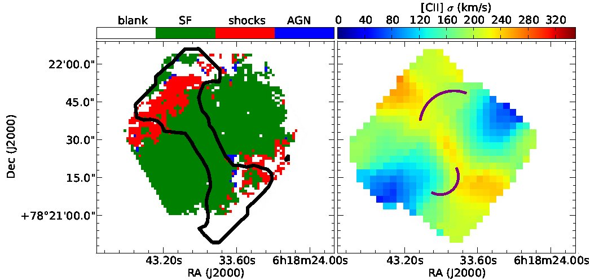
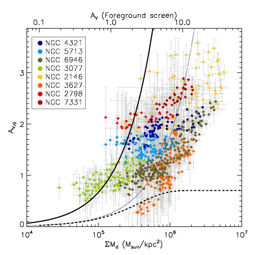
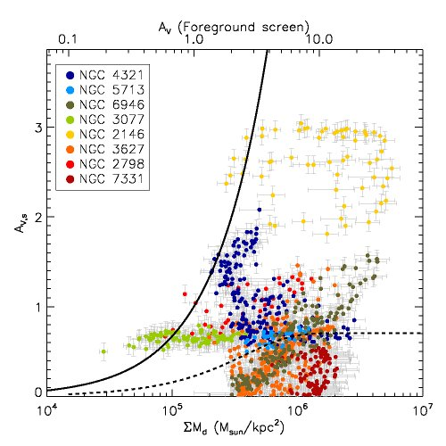

The Reach of Stars
Tracing the interaction length of Stellar and AGN Radiation in the ISM
The temperature and corresponding phase transitions of the interstellar medium (ISM) play key roles in the formation of stars, and thus galaxy evolution. However the physical processes involved are still not fundamentally understood: the cooling of the ISM to enable star formation, and the in turn heating of the ISM by the stars that form. ISM cooling is known to depend upon the local conditions, while ISM heating is connected to the distribution of stars, yet the exact scales on which these physical processes occur is still an open question. The Herschel Infrared Space Observatory is now enabling major breakthroughs in the understanding of these physical processes, providing spatially resolved maps of the interstellar dust, and the atomic and molecular emission, within galaxies, thus tracing the heating and cooling of the ISM, respectively. This proposal will take full advantage of Herschel to conduct an in-depth study of the ISM, combining exquisite infrared observations of nearby galaxies with state-of-the-art models. Using privileged access to KINGFISH, a legacy dataset of 61 galaxies, and data from our neighbour, the Andromeda galaxy (M31), we aim to measure the "The Reach of Stars". We study; a) the cooling mechanisms of the ISM using molecular and atomic emission lines, and b) ISM heating from the scales of molecular clouds and up, respectively, and reconcile these with the observed distribution of stars.
This project was funded through the DFG priority program 1573 "Physics of the Interstellar Medium", and ran from 2012-2018.
People involved:
Data sets:
- KINGFISH - a nearby galaxy sample with pan-chromatic imaging and spectroscopic data (PI: Kennicutt & Calzetti)
- FISHPPAK - Dedicated optical IFU observations using the PMAS/PPAK instrument (PI: Groves & Kreckel)
Project related publications:
- Calibrating Star Formation Rate Prescriptions at Different Scales (10 pc-1 kpc) in M31
Tomicic, N., Ho, I.-T., Kreckel, K., et al. 2019, ApJ, 873, 3 [ADS | arXiv]
- Two Orders of Magnitude Variation in the Star Formation Efficiency across the Premerger Galaxy NGC 2276
Tomicic, N., Hughes, A., Kreckel, K., et al. 2018, ApJL, 869, L38 [ADS | arXiv]
- A 50 pc Scale View of Star Formation Efficiency across NGC 628
Kreckel, K., Faesi, C., Kruijssen, J.~M.~D., et al. 2018, ApJL, 863, L21 [ADS | arXiv]
- Attenuation Modified by DIG and Dust as Seen in M31
Tomicic, N.; Kreckel, K.; Groves, B.; Schinnerer, E. et al. 2017, ApJ, 844, 155 [ADS | arXiv]
- A Revised Planetary Nebula Luminosity Function Distance to NGC 628 Using MUSE
Kreckel, K.; Groves, B. et al. 2017, ApJ, 834, 174 [ADS | arXiv]
- Characterizing Spiral Arm and Interarm Star Formation
Kreckel, K.; Blanc, G. A.; Schinnerer, E.; Groves, B.; Adamo, A.; Hughes, A.; Meidt, S. 2016, ApJ, 827, 103[ADS | arxiv]
- The Survey of Lines in M31 (SLIM): Investigating the Origins of [CII] Emission
Kapala, M. J.; Sandstrom, K.; Groves, B.; Croxall, K.; Kreckel, K.; Dalcanton, J.; Leroy, A.; Schinnerer, E.; Walter, F.; Fouesneau, M. 2015, ApJ, 798, 24 [ADS | arxiv]
- A far-IR view of the starburst driven superwind in NGC 2146
Kreckel, Armus, Groves, et a. 2014, ApJ accepted, arXiv:1403.2381 [ADS | arXiv]
- Mapping Dust through Emission and Absorption in Nearby Galaxies
Kreckel, Groves, Schinnerer, et al. 2013, ApJ, 771, 62 [ADS | arXiv]
- Unveiling the Excitation Source of the ISM in Nearby Galaxies
Kreckel, Groves, Schinnerer, Pellegrini, KINGFISH collaboration 2013, AAS 221 [ADS]
- The Energy Budget of Massive Star-Formation in Andromeda
Sandstrom, Groves, Kapala, et al. 2013, AAS 221 [ADS]
- The heating of dust by old stellar populations in the bulge of M31
Groves, Krause, Sandstrom, et a. 2012, MNRAS, 426, 892 [ADS | arXiv]
Key results:
- A far-IR view of the starburst driven superwind in NGC 2146 [ADS | arXiv]

NGC 2146, a nearby luminous infrared galaxy (LIRG), presents evidence for outflows along the disk minor axis in all gas phases (ionized, neutral atomic and molecular). We present an analysis of the multi-phase starburst driven superwind in the central 5 kpc as traced in spatially resolved spectral line observations, using far-IR Herschel PACS spectroscopy, to probe the effects on the atomic and ionized gas, and optical integral field spectroscopy to examine the ionized gas through diagnostic line ratios. Right: An optical image shows a disturbed morphology. The field of view of the optical (green, left panel) and far-IR (red, center panel) observations are indicated. Left: The optically identified shock regions (red) show very good agreement with the high velocity dispersion outflow identified in the [CII] line (black contours). Center: The location (purple contours) of the superbubble (south) and molecular outflow (north) identified by Tsai et al. (2009) appear offset from the outflow identified by the increase in [CII] velocity dispersion (in color). Our observations of NGC 2146 in the far-IR allow an unobscured view of the wind, crucial for tracing the superwind to the launching region at the disk center, and provide a local analog for future ALMA observations of outflows in high redshift systems.
- Mapping dust through emission and absorption in nearby galaxies [ADS | arXiv]

A comparison of the dust mass surface density with the V-band extinction at 18" (0.3 - 2.2 kpc) resolution for eight nearby galaxies. We measure the dust mass surface density through Far-IR SED modeling using a Draine & Li (2007) dust model, and we assume the Calzetti et al. (2000) attenuation law to measure the extinction either through reddening of the Balmer decrement (left) or the stellar continuum (right). The solid line is the V-band extinction implied assuming a foreground screen model, the dashed line assumes a mixed media model.
The stellar continuum reddening, which is systematically less than that observed in the Balmer decrement, shows no clear correlation with the dust, suggesting that the distribution of stellar reddening acts as a poor tracer of the overall dust content. Our work shows there is a correlation between the Balmer line reddening and the dust mass surface density, and by scaling the foreground screen model by a factor of 3.8 (dotted line) we are able to predict the dust mass surface density within a factor of two for ~70% of the sample.
We are also involved in organizing the conference Phases of the ISM, which aims to summarize our current understanding of the ISM phases in the Milky Way, how we expect these phases to vary across different galaxy types, and how we can use and disentangle observational tracers like the [CII]158 micron or HI lines that arise from the various ISM phases.
{kind=link}
{kind=link}
{kind=link}